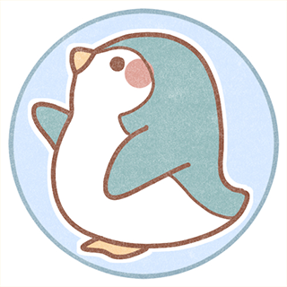
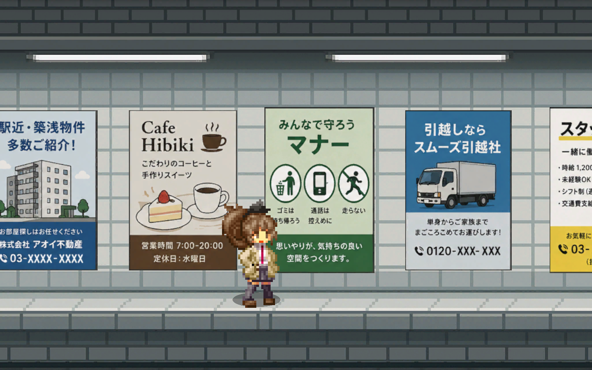
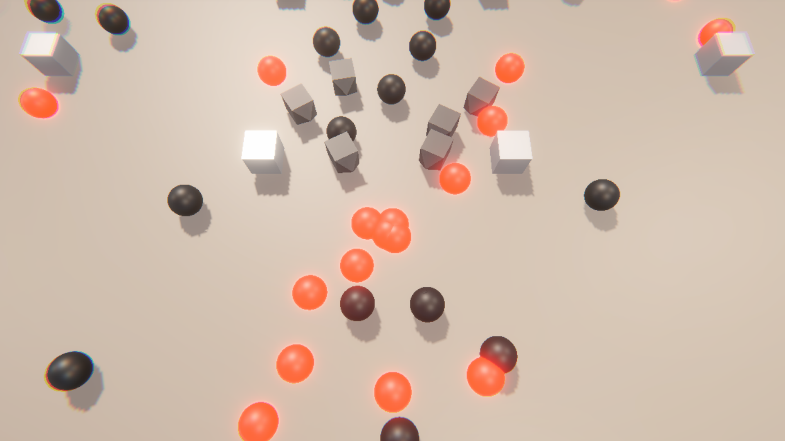

自己紹介

大原学園 熊本情報ITクリエイター専門学校
大原 ペンタ
プロフィール
- 学 年：2年生
- 学 科：ゲーム・クリエイター学科
- コース：ゲーム制作２年制コース
- 使用言語：C/C++・C#・HLSL
- 使用ツール：Unity・Unreal Engine
- 趣 味：ゲーム・アニメ・組み込み開発・作曲・料理・カメラ
自己紹介
現在、熊本情報ITクリエイター専門学校でゲーム制作を学んでいます。
授業を通してC++やHLSLに興味を持ち、ゲーム制作の勉強を始めました。
ゲーム制作の中でもユーザーが直感的に操作できる画面作りを意識して学習しています。
まだまだ初心者ですが、使いやすさ、不快感の解消を考えながら、少しずつユーザー目線を意識した
ゲーム作りを目指していきたいと思っています。
一言
コーディング原則を理解しつつ、目的達成を重視した最適な設計・実装を選択することを心がけています。
スキル
プログラミング言語
- C#（3年）
- C/C++（3年）
- Python（3ヶ月）
ゲーム開発環境
- Unity(C#)（3年半）
- Unreal Engine(Blueprint/C++)（3年半）
- DX ライブラリ(C/C++)（2年）
コードエディタ
- Visual Studio
- Visual Studio Code
バージョン管理ツール
- Git hub Desktop
音楽制作
- Cubase（3年半）
イラスト
- Photoshop（3年）
3Dモデリング
- Maya（3年）
制作ゲーム

八番出口２D版
プレイヤーがキャラクターを操作してゴールを目指す、シンプルなアクションゲームです。
操作のしやすさ、キャラへの愛着を目指しました。
ジャンル：2D脱出ゲーム
制作期間：３時間
GitHub:

シューティングハッキングゲーム
敵を倒しながらステージを進んでいく、シンプルなシューティングゲームを制作しました。
プレイヤーと敵の当たり判定や弾の挙動など、基本的なゲーム処理の実装に力を入れました。また、スコア機能を追加することで、繰り返し遊べるよう工夫しています。
ジャンル：2Dシューティングゲーム
制作期間：３時間
GitHub: